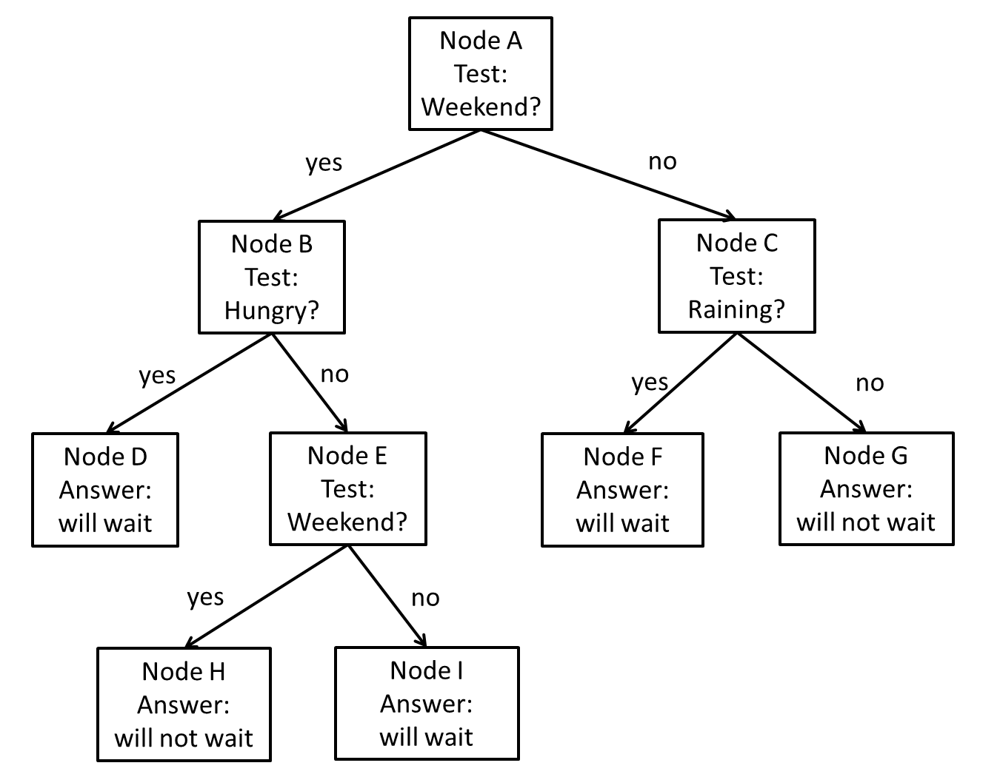

Written Assignment - Decision Trees, Nearest Neighbor Classifiers
and Neural Networks
NOTE: Task for Neural Networks (TASK
6) is
NOT required for CSE 4308 003/ CSE 5360 003/ CSE 5360 203 students. It
is only required for CSE 4308 001/CSE 5360 001/CSE 5360 201
students.
Task 1
20 points

Figure 3: A decision tree for estimating
whether the patron will be willing to wait for a table at a restaurant.
Part a (5 points): Suppose that,
on the
entire set of training samples available for constructing the decision
tree of Figure 1, 80 people decided to wait, and 20 people decided not
to wait. What is the initial entropy at node A (before the test is
applied)?
Part b (5 points):
As mentioned in the
previous part, at node A 80 people decided to wait, and 20 people
decided not to wait.
- Out of the cases where people decided to wait, in 20 cases
it was weekend and in 60 cases it was not weekend.
- Out of the cases where people decided not to wait, in 15
cases it was weekend and in 5 cases it was not weekend.
What is the information gain for the weekend test at node A?
Part c (5 points):
In the decision tree of
Figure 1, node E uses the exact same test (whether it is weekend or
not) as node A. What is the information gain, at node E, of using the
weekend test?
Part d (5 points):
We have a test case of a
hungry patron who came in on a rainy Sunday. Which leaf node does this
test case end up in? What does the decision tree output for that case?
Task 2
15 points
| Class |
A |
B |
C |
| X |
1 |
2 |
1 |
| X |
2 |
1 |
2 |
| X |
3 |
2 |
2 |
| X |
1 |
3 |
3 |
| X |
1 |
2 |
2 |
| Y |
2 |
1 |
1 |
| Y |
3 |
1 |
1 |
| Y |
2 |
2 |
2 |
| Y |
3 |
3 |
1 |
| Y |
2 |
1 |
1 |
We want to build a decision tree that determines whether a certain
pattern is of type X or type Y. The decision tree can only use tests
that are based on attributes A, B, and C. Each attribute has 3 possible
values: 1, 2, 3 (we do not apply any thresholding). We have the 10
training examples, shown on the table (each row corresponds to a
training example).
What is the information gain of each attribute at the root?
Which attribute achieves the highest information gain at the root?
Task 3
20 points
Suppose that, at a node N of a decision tree, we have 1000 training
examples. There are four possible class labels (A, B, C, D) for each of
these training examples.
Part a: What is the highest
possible and lowest possible entropy value at node N?
Part b: Suppose that, at node N,
we choose an attribute K. What is the highest possible and lowest
possible information gain for that attribute?
Task 4
5 points
Your boss at a software company gives you a binary classifier (i.e., a
classifier with only two possible output values) that predicts, for any
basketball game, whether the home team will win or not. This classifier
has a 28% accuracy, and your boss assigns you the task of improving
that classifier, so that you get an accuracy that is better than 60%.
How do you achieve that task? Can you guarantee achieving better than
60% accuracy?
Task 5
10 points
Consider
the Training set for a Pattern Classification problem given below
| Attribute 1 |
Attribute 2 |
Class |
| 15 |
28 |
A |
| 20 |
10 |
B |
| 25 |
18 |
A |
| 32 |
15 |
B |
| 25 |
15 |
B |
Assuming
we want to build a Pseudo-Bayes classifier for this problem using one
dimensional gaussians (with naive-bayes assumption) to approximate the
required probabilties. Calculate the probabilites required.
Task 6 (ONLY FOR CSE 4308-001, CSE 5360-001 and CSE 5360-201
students)
15 points
Can
you design a single neuron that will return 1 if 4X - 7Y + 2Z =
6. If so give the weights of the neuron. If not, can you design a
simple neural network to achieve the same result? If yes, give the
weights of every node in that network.
- Assume a bias input of +1
- Assume the following activation function:
- If x >= 0, return 1
- else return 0